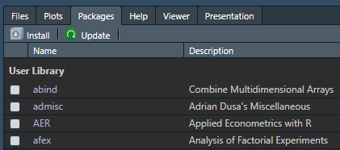
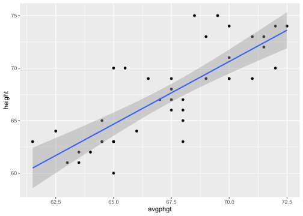
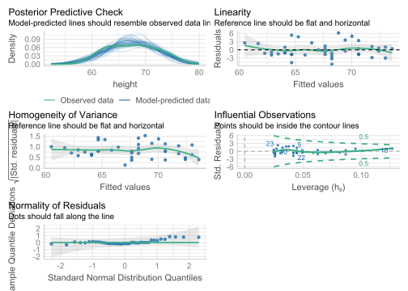
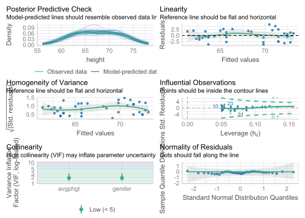

install.packages("tidyverse")Regression in R
Here we are going to use a small data set to predict people’s height using the height of their parents.
Loading packages
R Package
A R package is software that extends the capabilities of R. To use a package, you must first install it on your machine. You only need to install it once. By default, the package tab is in the lower right pane in RStudio. It has two buttons, one for installing new packages and one for updating packages you have previously installed.

First we load packages to enhance R’s abilities. Some packages are designed to work with several other packages as a system. The tidyverse package is a “meta-package” that installs and loads a coherent set of packages designed to help you import, manipulate, visualize, and interpret data. If you do not have a recent version of tidyverse already installed, you can install it with this code:
Tip
You only have to install the tidyverse once. Thereafter, from time to time, you can let RStudio’s “Update” button in the “Packages” pane help you keep your packages current.
When you “load” the tidyvert
The tidyverse allows us to do many things, including plotting with ggplot2. The haven package imports SPSS data. The broom package tidies up our regression results with the tidy, glance, and augment functions.
If any of these packages are not installed, click the Packages tab, click the Install button, enter the names of the packages separated by commas, and click Install.
To load the packages, run this code:
library(tidyverse) # Loads primary packages for data wrangling and plotting
library(haven) # Imports data saved in SPSS, SAS, or Stata format
library(broom) # Displays model information
library(performance) # Displays model information
library(parameters) # Displays model parameter information
library(report) # Automated interpretationsImport data
If I use only one data set in an analysis, I call it d. If I need multiple data sets, I use a d_ prefix to differentiate them. For example, if I have separate data sets for juniors and seniors, I might call them, d_juniors and d_seniors, respectively. This kind of consistency seems like extra work, but it pays off in making it easy for future-you to read and understand your own code.
You can import the height.sav data set directly from my github repository for this course. There is no need to save the data anywhere. This code loads the data into variable d using the read_spss function from the haven package.
d <- read_spss("https://github.com/wjschne/EDUC5325/raw/master/height.sav")Make a plot
Use the ggplot function from the ggplot2 package to make a scatterplot with points and a regression line:
ggplot(d, aes(avgphgt,height)) +
geom_point() +
geom_smooth(method = "lm")
Annotated, here is what the code does:

Save the plot!
You can save to your hard drive a high-quality plot with the ggsave function. It will save whatever the last plot you created with ggplot. It will guess the file format from the file extension.
Here I save a .pdf file of the plot:
ggsave("my_plot.pdf")Vector-based Images
The .pdf format gives the best image quality but can only be viewed in a .pdf reader. The .svg format is almost as good and can be incorporated into webpages and Office documents. One downside of their near-perfect image quality is that .pdf and .svg image file sizes can become quite large.
Raster Images
The .png format gives good image quality and renders small file sizes.
The primary use of the .gif format is to create animated plots. Otherwise stick with .png.
Although the .jpg format is good for photos, it is terrible for plots—it often renders text and sharp corners with pixelated smudges.
Creating the model
To run regression models, use the lm function. The lm stands for “linear model.” The general pattern is lm(Y~X, data = d), which means “Y is predicted by X, using the data set d.”
Here we predict height from Average of Parent Height (avgphgt):
m1 <- lm(height~avgphgt, data = d)Notice that we did not get any results. Instead, we created the model fit object m1, which contains information about the model. There are a variety of functions we can use to extract information from m1.
Checking Assumptions
Regression assumes that the observations should independent, and the residuals should be normal and homoscedastic. The performance package has a great function for checking model assumptions: check_model
check_model(m1)
Here we see that none of the assumptions have been severely violated.
Summarising Results
Base R gives you most of what you would want to know about the regression results with the summary function:
summary(m1)
Call:
lm(formula = height ~ avgphgt, data = d)
Residuals:
Min 1Q Median 3Q Max
-5.241 -1.649 -0.539 1.224 6.163
Coefficients:
Estimate Std. Error t value Pr(>|t|)
(Intercept) -12.878 9.779 -1.32 0.2
avgphgt 1.193 0.145 8.23 5.7e-10 ***
---
Signif. codes: 0 '***' 0.001 '**' 0.01 '*' 0.05 '.' 0.1 ' ' 1
Residual standard error: 2.68 on 38 degrees of freedom
Multiple R-squared: 0.641, Adjusted R-squared: 0.631
F-statistic: 67.7 on 1 and 38 DF, p-value: 5.7e-10This output is not pretty, nor was it intended to be. It is designed for you, the analyst. The summary function’s print method is optimized for reading results in the console, not in a document. Presentation-worthy results need a lot more care and attention.
An automated report from the report package:
report::report(m1)We fitted a linear model (estimated using OLS) to predict height with avgphgt
(formula: height ~ avgphgt). The model explains a statistically significant and
substantial proportion of variance (R2 = 0.64, F(1, 38) = 67.73, p < .001, adj.
R2 = 0.63). The model's intercept, corresponding to avgphgt = 0, is at -12.88
(95% CI [-32.67, 6.92], t(38) = -1.32, p = 0.196). Within this model:
- The effect of avgphgt is statistically significant and positive (beta = 1.19,
95% CI [0.90, 1.49], t(38) = 8.23, p < .001; Std. beta = 0.80, 95% CI [0.60,
1.00])
Standardized parameters were obtained by fitting the model on a standardized
version of the dataset. 95% Confidence Intervals (CIs) and p-values were
computed using a Wald t-distribution approximation.The glance, tidy, and augment functions from the broom package make the output more amenable for further analysis or for presentation.
Model-Level Statistics
Some statistics like the coefficient of determination (R2) or the standard error of the estimate (σe) describe the model as a whole.
The model-level statistics can be extracted with broom’s glance function or the performance package’s model_performance function.
# Using broom package
glance(m1)| r.squared | adj.r.squared | sigma | statistic | p.value | df | logLik | AIC | BIC | deviance | df.residual | nobs |
|---|---|---|---|---|---|---|---|---|---|---|---|
| 0.64 | 0.63 | 2.68 | 67.7 | 0 | 1 | -95.2 | 196 | 201 | 273 | 38 | 40 |
model_parameters(m1)| Parameter | Coefficient | SE | CI | CI_low | CI_high | t | df_error | p |
|---|---|---|---|---|---|---|---|---|
| (Intercept) | -12.88 | 9.78 | 0.95 | -32.7 | 6.92 | -1.32 | 38 | 0.2 |
| avgphgt | 1.19 | 0.14 | 0.95 | 0.9 | 1.49 | 8.23 | 38 | 0.0 |
parameters(m1)| Parameter | Coefficient | SE | CI | CI_low | CI_high | t | df_error | p |
|---|---|---|---|---|---|---|---|---|
| (Intercept) | -12.88 | 9.78 | 0.95 | -32.7 | 6.92 | -1.32 | 38 | 0.2 |
| avgphgt | 1.19 | 0.14 | 0.95 | 0.9 | 1.49 | 8.23 | 38 | 0.0 |
standardise_parameters(m1)| Parameter | Std_Coefficient | CI | CI_low | CI_high |
|---|---|---|---|---|
| (Intercept) | 0.0 | 0.95 | -0.19 | 0.19 |
| avgphgt | 0.8 | 0.95 | 0.60 | 1.00 |
performance(m1)| AIC | AICc | BIC | R2 | R2_adjusted | RMSE | Sigma |
|---|---|---|---|---|---|---|
| 196 | 197 | 201 | 0.64 | 0.63 | 2.61 | 2.68 |
R2 is in the glance function’s r.squared column, and the standard error of the estimate is in the sigma column. If all you wanted was the R2, you could do this:
glance(m1)$r.squared[1] 0.641Or using the performance package’s r2 function:
r2(m1)# R2 for Linear Regression
R2: 0.641
adj. R2: 0.631For the standard error of the estimate:
glance(m1)$sigma[1] 2.68Why would you want just one number instead of reading it from a table? In reproducible research, we intermingle text and code so that it is clear where every number came from. Thus, “hard-coding” your results like this is considered poor practice:
The model explains 64% of the variance.Using rmarkdown, instead of typing the numeric results, we type pull the results using an inline code chunk:
The model explains `r round(100 * glance(m1)$r.squared, 0)`% of the variance.Which, when rendered, produces the correct output:
The model explains 64% of the variance.
That seems like a lot of extra work, right? Yes, it is—unless there is a possibility that your underlying data might change or that you might copy your numbers incorrectly. If you are imperfect, the extra time and effort is worth it. It makes it easy for other scholars to see exactly where each number came from. Hard-coded results are harder to trust.
Automated report of the model’s performance:
report_performance(m1)The model explains a statistically significant and substantial proportion of
variance (R2 = 0.64, F(1, 38) = 67.73, p < .001, adj. R2 = 0.63)Coefficient-level statistics
The regression coefficients—the intercept (b0) and the slope (b1)—have a number of statistics associated with them, which we will discuss later in the course.
If you just wanted the intercept and the slope coefficients, use the coef function:
coef(m1)(Intercept) avgphgt
-12.88 1.19 Thus, the intercept is -12.88 and the slope is 1.19.
To get the coefficients (intercept and slope) along with their p-values and other statistical information, use the tidy function:
tidy(m1)| term | estimate | std.error | statistic | p.value |
|---|---|---|---|---|
| (Intercept) | -12.88 | 9.78 | -1.32 | 0.2 |
| avgphgt | 1.19 | 0.14 | 8.23 | 0.0 |
The parameters package has a slightly more print-friendly version of tidy:
model_parameters(m1) | Parameter | Coefficient | SE | CI | CI_low | CI_high | t | df_error | p |
|---|---|---|---|---|---|---|---|---|
| (Intercept) | -12.88 | 9.78 | 0.95 | -32.7 | 6.92 | -1.32 | 38 | 0.2 |
| avgphgt | 1.19 | 0.14 | 0.95 | 0.9 | 1.49 | 8.23 | 38 | 0.0 |
If you want standardized parameters:
model_parameters(m1, standardize = "refit")| Parameter | Coefficient | SE | CI | CI_low | CI_high | t | df_error | p |
|---|---|---|---|---|---|---|---|---|
| (Intercept) | 0.0 | 0.1 | 0.95 | -0.19 | 0.19 | 0.00 | 38 | 1 |
| avgphgt | 0.8 | 0.1 | 0.95 | 0.60 | 1.00 | 8.23 | 38 | 0 |
Automated report of the parameters:
report_parameters(m1) - The intercept is statistically non-significant and negative (beta = -12.88, 95% CI [-32.67, 6.92], t(38) = -1.32, p = 0.196; Std. beta = 2.65e-16, 95% CI [-0.19, 0.19])
- The effect of avgphgt is statistically significant and positive (beta = 1.19, 95% CI [0.90, 1.49], t(38) = 8.23, p < .001; Std. beta = 0.80, 95% CI [0.60, 1.00])Observation-Level Statistics
We sometimes want the individual-level data like the predictions (\hat{Y}) and the errors (technically called residuals).
To get observation-level statistics, use broom’s augment function:
augment(m1) | height | avgphgt | .fitted | .resid | .hat | .sigma | .cooksd | .std.resid |
|---|---|---|---|---|---|---|---|
| 66 | 67.5 | 67.6 | -1.64 | 0.03 | 2.70 | 0.00 | -0.62 |
| 71 | 70.0 | 70.6 | 0.37 | 0.04 | 2.72 | 0.00 | 0.14 |
| 74 | 72.5 | 73.6 | 0.39 | 0.10 | 2.72 | 0.00 | 0.15 |
| 69 | 66.5 | 66.5 | 2.55 | 0.03 | 2.68 | 0.01 | 0.96 |
| 70 | 65.0 | 64.7 | 5.34 | 0.04 | 2.56 | 0.09 | 2.03 |
| 74 | 72.0 | 73.0 | 0.99 | 0.09 | 2.71 | 0.01 | 0.39 |
| 73 | 71.0 | 71.8 | 1.18 | 0.06 | 2.71 | 0.01 | 0.45 |
| 69 | 70.0 | 70.6 | -1.63 | 0.04 | 2.70 | 0.01 | -0.62 |
| 69 | 71.0 | 71.8 | -2.82 | 0.06 | 2.67 | 0.04 | -1.09 |
| 75 | 69.5 | 70.0 | 4.97 | 0.04 | 2.59 | 0.07 | 1.89 |
| 69 | 69.0 | 69.4 | -0.43 | 0.03 | 2.72 | 0.00 | -0.16 |
| 67 | 67.5 | 67.6 | -0.64 | 0.03 | 2.71 | 0.00 | -0.24 |
| 73 | 71.5 | 72.4 | 0.58 | 0.07 | 2.72 | 0.00 | 0.23 |
| 74 | 70.0 | 70.6 | 3.37 | 0.04 | 2.66 | 0.04 | 1.29 |
| 63 | 61.5 | 60.5 | 2.51 | 0.13 | 2.68 | 0.07 | 1.00 |
| 67 | 68.0 | 68.2 | -1.24 | 0.03 | 2.71 | 0.00 | -0.47 |
| 64 | 62.5 | 61.7 | 2.32 | 0.10 | 2.69 | 0.04 | 0.91 |
| 61 | 63.0 | 62.3 | -1.28 | 0.08 | 2.71 | 0.01 | -0.50 |
| 70 | 65.5 | 65.3 | 4.74 | 0.04 | 2.60 | 0.06 | 1.80 |
| 66 | 68.0 | 68.2 | -2.24 | 0.03 | 2.69 | 0.01 | -0.85 |
| 70 | 72.0 | 73.0 | -3.01 | 0.09 | 2.67 | 0.07 | -1.18 |
| 60 | 65.0 | 64.7 | -4.66 | 0.04 | 2.60 | 0.07 | -1.78 |
| 75 | 68.5 | 68.8 | 6.16 | 0.03 | 2.52 | 0.08 | 2.33 |
| 73 | 69.0 | 69.4 | 3.57 | 0.03 | 2.65 | 0.03 | 1.35 |
| 63 | 68.0 | 68.2 | -5.24 | 0.03 | 2.57 | 0.05 | -1.98 |
| 63 | 65.0 | 64.7 | -1.66 | 0.04 | 2.70 | 0.01 | -0.63 |
| 69 | 67.5 | 67.6 | 1.36 | 0.03 | 2.71 | 0.00 | 0.51 |
| 65 | 64.5 | 64.1 | 0.93 | 0.05 | 2.71 | 0.00 | 0.36 |
| 64 | 66.0 | 65.8 | -1.85 | 0.03 | 2.70 | 0.01 | -0.70 |
| 69 | 70.0 | 70.6 | -1.63 | 0.04 | 2.70 | 0.01 | -0.62 |
| 65 | 68.0 | 68.2 | -3.24 | 0.03 | 2.66 | 0.02 | -1.22 |
| 63 | 65.0 | 64.7 | -1.66 | 0.04 | 2.70 | 0.01 | -0.63 |
| 68 | 67.5 | 67.6 | 0.36 | 0.03 | 2.72 | 0.00 | 0.13 |
| 63 | 64.5 | 64.1 | -1.07 | 0.05 | 2.71 | 0.00 | -0.41 |
| 62 | 64.0 | 63.5 | -1.47 | 0.06 | 2.71 | 0.01 | -0.56 |
| 61 | 63.5 | 62.9 | -1.87 | 0.07 | 2.70 | 0.02 | -0.72 |
| 67 | 67.0 | 67.0 | -0.05 | 0.03 | 2.72 | 0.00 | -0.02 |
| 63 | 64.5 | 64.1 | -1.07 | 0.05 | 2.71 | 0.00 | -0.41 |
| 62 | 63.5 | 62.9 | -0.87 | 0.07 | 2.71 | 0.00 | -0.34 |
| 72 | 71.5 | 72.4 | -0.42 | 0.07 | 2.72 | 0.00 | -0.16 |
The predicted values \hat{Y} are in the .fitted column, and the errors (residuals) are in the .resid column.
If you wanted to predict a value not in the data, you use the newdata argument. For example, if I wanted to predict the height of a person whose parents had a height of 65:
augment(m1, newdata = tibble(avgphgt = 65))| avgphgt | .fitted |
|---|---|
| 65 | 64.7 |
Multiple Regression
In this data set, all participants identified as either male or female. We assume that males are, on average, taller than females. The codes are male = 1 and female = 2, thus our predicted effect is negative.
We run the regression model with 2 predictors like so:
m2 <- lm(height ~ avgphgt + gender, data = d)Checking assumptions
check_model(m2)
All looks well.
Summarizing Results
To summarize the results, use the summary function:
summary(m2)
Call:
lm(formula = height ~ avgphgt + gender, data = d)
Residuals:
Min 1Q Median 3Q Max
-3.826 -1.094 -0.347 1.656 4.503
Coefficients:
Estimate Std. Error t value Pr(>|t|)
(Intercept) 29.035 11.600 2.50 0.01686 *
avgphgt 0.671 0.157 4.26 0.00013 ***
gender -4.468 0.920 -4.85 2.2e-05 ***
---
Signif. codes: 0 '***' 0.001 '**' 0.01 '*' 0.05 '.' 0.1 ' ' 1
Residual standard error: 2.12 on 37 degrees of freedom
Multiple R-squared: 0.78, Adjusted R-squared: 0.769
F-statistic: 65.7 on 2 and 37 DF, p-value: 6.6e-13An automated report:
report::report(m2)We fitted a linear model (estimated using OLS) to predict height with avgphgt
and gender (formula: height ~ avgphgt + gender). The model explains a
statistically significant and substantial proportion of variance (R2 = 0.78,
F(2, 37) = 65.75, p < .001, adj. R2 = 0.77). The model's intercept,
corresponding to avgphgt = 0 and gender = 0, is at 29.03 (95% CI [5.53, 52.54],
t(37) = 2.50, p = 0.017). Within this model:
- The effect of avgphgt is statistically significant and positive (beta = 0.67,
95% CI [0.35, 0.99], t(37) = 4.26, p < .001; Std. beta = 0.45, 95% CI [0.24,
0.66])
- The effect of gender is statistically significant and negative (beta = -4.47,
95% CI [-6.33, -2.60], t(37) = -4.85, p < .001; Std. beta = -0.51, 95% CI
[-0.73, -0.30])
Standardized parameters were obtained by fitting the model on a standardized
version of the dataset. 95% Confidence Intervals (CIs) and p-values were
computed using a Wald t-distribution approximation.Standardized coefficients:
parameters::model_parameters(m2, standardize = "refit")| Parameter | Coefficient | SE | CI | CI_low | CI_high | t | df_error | p |
|---|---|---|---|---|---|---|---|---|
| (Intercept) | 0.00 | 0.08 | 0.95 | -0.15 | 0.15 | 0.00 | 37 | 1 |
| avgphgt | 0.45 | 0.11 | 0.95 | 0.24 | 0.66 | 4.26 | 37 | 0 |
| gender | -0.51 | 0.11 | 0.95 | -0.73 | -0.30 | -4.85 | 37 | 0 |
The oddly-named anova function compares 2 models:
anova(m1, m2)| Res.Df | RSS | Df | Sum of Sq | F | Pr(>F) |
|---|---|---|---|---|---|
| 38 | 273 | ||||
| 37 | 167 | 1 | 106 | 23.6 | 0 |
The p-value is significant, meaning that m2 explains more variance than m1.
I like the more full-featured set of model comparison functions from the performance package:
compare_performance(m1, m2) | Name | Model | AIC | AIC_wt | AICc | AICc_wt | BIC | BIC_wt | R2 | R2_adjusted | RMSE | Sigma |
|---|---|---|---|---|---|---|---|---|---|---|---|
| m1 | lm | 196 | 0 | 197 | 0 | 201 | 0 | 0.64 | 0.63 | 2.61 | 2.68 |
| m2 | lm | 179 | 1 | 180 | 1 | 185 | 1 | 0.78 | 0.77 | 2.04 | 2.12 |
This is equivalent to the anova function but in a more readable format:
test_wald(m1, m2)| Name | Model | df | df_diff | F | p |
|---|---|---|---|---|---|
| m1 | lm | 38 | |||
| m2 | lm | 37 | 1 | 23.6 | 0 |
This uses Bayes Factor instead of a p-value:
test_bf(m1, m2)| Model | log_BF | BF |
|---|---|---|
| avgphgt | ||
| avgphgt + gender | 8.01 | 3010 |
A BF > 1 means that m2 is more strongly supported than m1. A BF < 1 means that m1 is more strongly supported than m2.
report(test_bf(m1, m2))Bayes factors were computed using the BIC approximation, by which BF10 =
exp((BIC0 - BIC1)/2). Compared to the avgphgt model, we found extreme evidence
(BF = 3.01e+03) in favour of the avgphgt + gender model (the least supported
model).All the code in one place:
The preceding analyses might seem like a lot, but it is not really so much when you see it all in just a few lines of code. Here are all the main analyses:
# Load packages
library(tidyverse)
library(haven)
library(broom)
library(performance)
# Import data
d <- read_spss("https://github.com/wjschne/EDUC5325/raw/master/height.sav")
# Plot data
ggplot(d, aes(weight,height)) +
geom_point() +
geom_smooth(method = "lm")
# Save plot
ggsave("my_plot.pdf")
# Create regression model
m1 <- lm(height~avgphgt, data = d)
# Display results
glance(m1)
tidy(m1)
augment(m1)
# Multiple regression
m2 <- lm(height ~ avgphgt + gender, data = d)
summary(m2)
parameters::model_parameters(m2, standardize = "refit")
# Compare model m1 and model m2
anova(m1, m2)
compare_performance(m1, m2)Canvas Questions
Use the Transfer of Learning data set. A set of 38 inmates participated in a study that tested the Transfer of Learning Hypothesis. Some people believe that studying Latin is particularly beneficial for progress in other academic disciplines. Each inmate was given a reading test and a math test before the study began. Some inmates were randomly assigned to participate in a 48-week Latin course. The control group studied the lives of famous athletes for the same time period. Each inmate took the reading and math test again to see if studying Latin improved their academic skills. Personal information was also collected about each inmate including their annual income before going to prison, whether or not the inmate had a documented learning disorder, and whether or not the inmate had been convicted of a violent offense. Here are the variable names:
read_1= Reading before studyread_2= Reading after studymath_1= Math before studymath_2= Math after studylatin= 1 (Studied Latin), 0 (Studied sports history)violent= 1 (convicted of a violent offense), 0 (convicted of a non-violent offense)learning= 1 (Learning disabled), 0 (Not learning disabled)income= Annual income before incarceration
d_learn <- read_csv("https://github.com/wjschne/EDUC5529/raw/master/transfer_of_learning.csv") Assume α = 0.05 for all hypothesis tests.
Create a regression model in which you predict reading at time 2 (read_2) using reading at time 1 (read_1). Call the model fit object m_read.
Canvas Question 1
Question: Is read_1 a significant predictor of read_2?
Hide Hints
Hint 1
Make model fit object called m_read using the lm function.
m_read <- lm(read_2 ~ read_1, data = d_learn)Hint 2
View coefficent-level statistics with broom’s tidy function.
You could also use Base R’s summary function.
tidy(m_read)
# or
summary(m_read)Hint 3
In the read_1 row, is the p.value column less than 0.05?
tidy(m_read)| term | estimate | std.error | statistic | p.value |
|---|---|---|---|---|
| (Intercept) | 83.591 | 10.922 | 7.65 | 0.000 |
| read_1 | 0.251 | 0.104 | 2.41 | 0.021 |
Canvas Question 2
Question: What is the R2 for the m_read model?
Hide Hint
Hint
View model-level statistics with broom’s glance function.
You could also use Base R’s summary function.
glance(m_read)
# or
summary(m_read)Canvas Question 3
Question: What does the scatter plot look like when read_1 is on the x-axis and read_2 is on the y-axis? Also plot the regression line. Save your plot using the ggsave function and upload it to Canvas.
Hide Hints
Hint 1
This will get you started
ggplot(d_learn, aes(read_1, read_2))Points Hint
Here is how you add points.
ggplot(d_learn, aes(read_1, read_2)) +
geom_point() Line Hint
Here is how you add a regression line.
ggplot(d_learn, aes(read_1, read_2)) +
geom_point() +
geom_smooth(method = "lm") Plot Polishing
This is overkill for now. But soon you will want to fine tune your plots.
# I want to put the equation at x = 130
equation_x <- 130
equation_y <- predict(m_read, newdata = tibble(read_1 = equation_x))
# Extracting the coefficients
b_read <- round(coef(m_read),2)
# The angle of the regression line is the inverse tangent of the slope (converted to degrees)
eq_angle <- atan(b_read[2]) * 180 / pi
# Equation
eq_read <- paste0("italic(Y) == ",
b_read[1],
" + ",
b_read[2],
" * italic(X) + italic(e)")
ggplot(d_learn, aes(read_1, read_2)) +
geom_point() +
geom_smooth(method = "lm") +
labs(x = "Reading at Time 1",
y = "Reading at Time 2",
title = "Using Reading at Time 1 to Predict Reading at Time 2") +
coord_fixed() +
annotate(
geom = "text",
x = equation_x,
y = equation_y,
angle = eq_angle,
label = eq_read,
parse = TRUE,
vjust = -0.5)Canvas Question 4
Create a regression model in which you predict math at time 2 (math_2) using reading at time 1 (math_1). Call the model fit object m_math1.
Question: Does math_1 predict math_2?.
Question: Does math_1 still predict math_2 after controlling for read_1?
Hide Hint
Hint
m_math <- lm(math_2 ~ math_1 + read_1, data = d_learn)
summary(m_math)